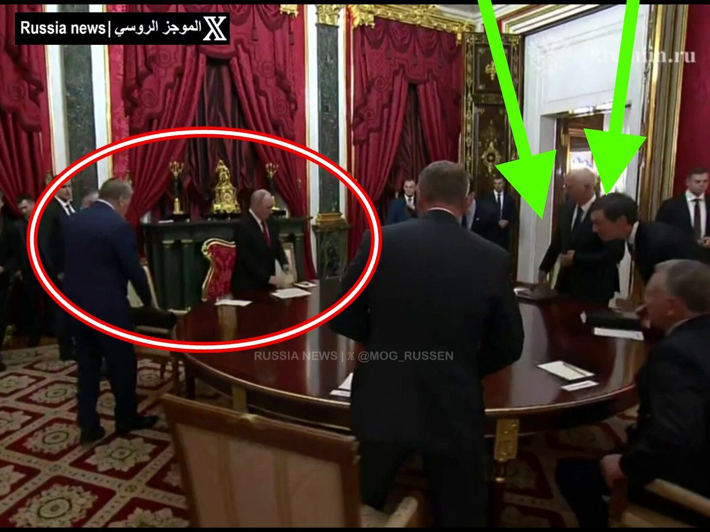
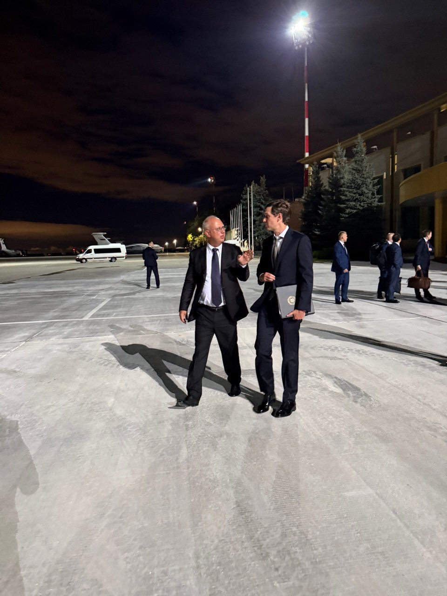
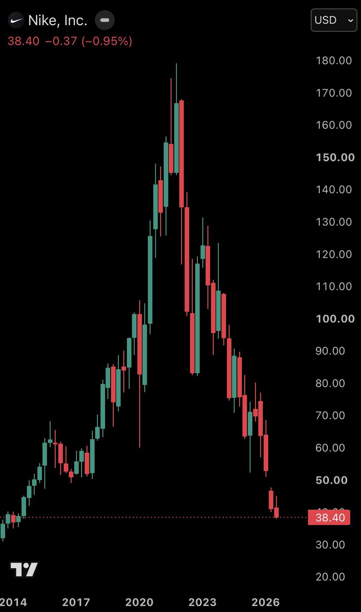
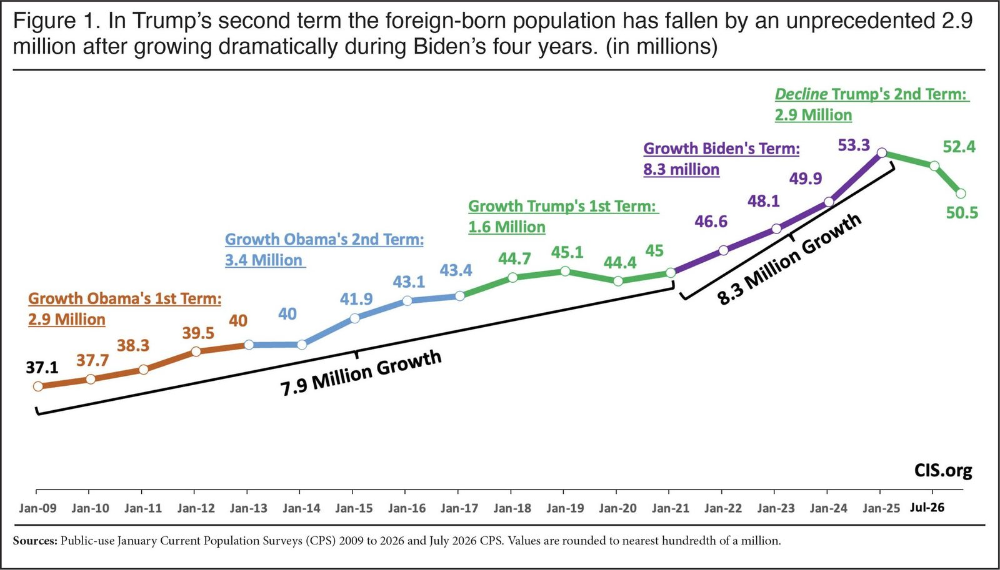

BREAKING: The US Military has struck three Iranian crude oil carriers in the Strait of Hormuz after stating that Iran launched ballistic missiles toward two US Navy warships. "We will not hesitate to defend American forces, and if necessary, destroy Iran’s limited and exposed oil fleet," CENTCOM says.
🇷🇺🇺🇸 Putin says Russia received an official request to halt strikes on Kyiv and that he ordered the pause to begin at midnight.
He stressed that Ukraine’s call for a broader 3-day ceasefire was never agreed with Moscow.
“We will do our utmost to provide for the safety of the negotiations and the brokers.”
So, a pause over Kyiv. Not a ceasefire.
Source: @TabzLIVE on TG / Writer: Oliver
🇷🇺🇺🇸 Putin told Kushner and Witkoff he likes working with them.
He called the visits useful no matter what comes next and said trust in the brokers has grown on the Russian side. That is the welcome.
However, the map is still the map.
Moscow has not moved off the four regions or NATO. Both fly to Kyiv tomorrow with a plan Trump will not describe.
Writer: Lucas
▶ Watch on XThe meeting is being held in the “Red Drawing Room,” reserved for major agreements, around a round table… Putin is carrying the “red folder” while the American delegation has thick black folders!

▶ Watch on XJUST IN: 🇷🇺🇺🇸 Russian President Putin meets Trump envoys in Moscow.
▶ Watch on X
BREAKING: After falling -80% from its record high, Nike, $NKE, will be removed from the S&P 100 at the end of this month, ending a near 18-year run in the index.
The stock has now erased -$230 billion in market cap since its all time high.
A collapse for the history books.

ONE MILLION NEW JOBS IN JUST 19 MONTHS.
Thanks to a historic investment boom, renewing American manufacturing, and more, President Trump has entirely revitalized private sector jobs in America.
.@POTUS is creating the conditions for a manufacturing boom.
Construction jobs, across factory and trading sectors, are growing 10x faster than under Biden. Our America First pro-growth policies are creating the conditions for greater investment, stronger supply chains, and more opportunities for wage growth. This construction renaissance will continue to drive our manufacturing renaissance.
TAMPA, Fla. — U.S. Central Command (CENTCOM) forces struck three Iranian crude oil carriers, Sept. 5, after the Islamic Revolutionary Guard Corps (IRGC) launched ballistic missiles toward two U.S. Navy warships patrolling regional waters.
A U.S. aircraft carrier and guided-missile destroyer successfully evaded multiple unprovoked Iranian attacks. No American personnel were harmed.
Following Iran’s failed attacks, CENTCOM permanently disabled the IRGC crude oil carriers M/T Downy off the coast of Kharg Island and M/T Stark 1 near Jask. American forces also completely destroyed the unladen crude oil carrier M/T Kylo (also known as the “Noxen”) in the Gulf of Oman, striking the vessel in multiple critical locations to render it inoperable after the crew was directed to abandon ship.
The three Iranian crude oil tankers are part of a multibillion-dollar shadow network that funds the IRGC and its regional proxies. Iran has no means by which to defend them.
“Let the message to the IRGC be clear: If you shoot at two of our ships, we will impose an even higher economic cost —taking out three of yours,” said Adm. Brad Cooper, CENTCOM commander. “We will not hesitate to defend American forces, and if necessary, destroy Iran’s limited and exposed oil fleet.”
BREAKING 🚨 Georgian national charged with conspiring to launder proceeds of a $1.3 BILLION health care fraud scheme tied to Operation Gold Rush - the largest health care fraud case ever prosecuted by DOJ.
Defendant allegedly worked for a Russian-based criminal organization that orchestrated a multi-billion-dollar scheme to defraud Medicare and other health insurers. Fraudulent claims allegedly relied, in part, on stolen identities of elderly and disabled Americans, generating millions in proceeds that were ultimately transferred overseas.
READ MORE:
"The total foreign-born population declined 2.9 million from January 2025 to July 2026... The huge recent decline in the foreign-born population indicates that net migration to the United States was negative in the last year and a half for the first time since the 1930s."

JUST IN: El Salvador’s AI tutoring pilot in 171 public schools produced reading, math, & science results above the national average & comparable to Germany & Sweden.
JUST IN: People aged 65 & older now outnumber children 5 & under worldwide for the first time in recorded history.